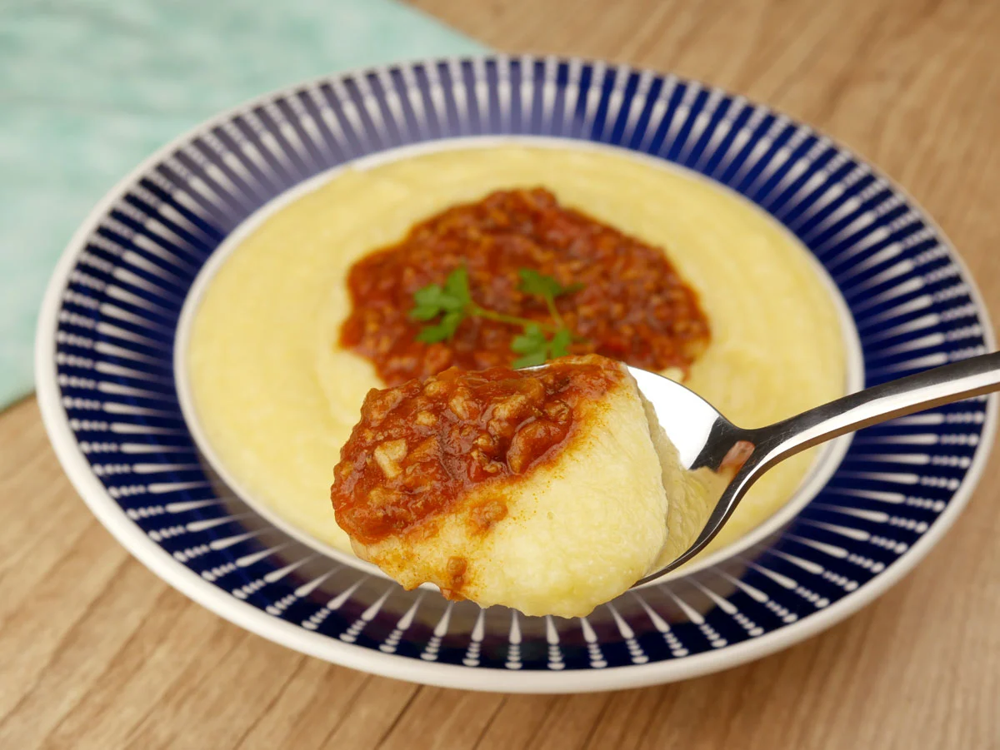

-
Polenta

Ingredientes:
- 2 litros de água
- 400 g de fubá
- 2 colheres (sopa) de manteiga
- 1 colher (sopa) de sal
Modo de Preparo:
- Em uma panela, leve a água ao fogo e acrescente o sal e a manteiga.
- Quando iniciar a fervura, acrescente o fuba e mexa sem parar para não empelotar.
- Deixe a polenta cozinhar por 30 minutos em fogo baixo.
- Despeje a polenta em um refratário, salpique com parmesão e cubra com o molho de sua preferência.
CURIOSIDADES:
-
Uma curiosidade sobre a polenta: você sabia que ela já existia no Brasil antes da chegada dos imigrantes italianos? Na verdade, o que se fazia por aqui era o angu, um prato preparado à base de água e fubá, geralmente temperado com sal e alho frito – e nós podemos dizer que o nosso angu influenciou a polenta italiana!
-